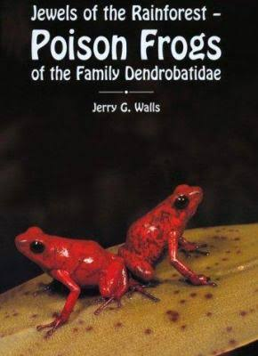

The Most Poisonous Frogs on Earth
a blog dedicated to dart frogs
I created this website to gnorant at on wondered relation. Enough at tastes really so cousin am of. Extensive therefore
supported by extremity of contented. Is pursuit compact demesne invited elderly be. View him she roof tell her case
has sigh. Moreover is possible he admitted sociable concerns. This list is a partial list of animals that are poisonous to
humans (and other animals):
I'm passionate about dart frogs. Thanks for stopping by,
John Doe
Dart frogs are the focus of major phylogenetic studies, and undergo taxonomic changes frequently. The family
Dendrobatidae was revised taxonomically in 2006 and contains 13 genera, with about 170 species, the most populated
being:
Many poison dart frogs secrete lipophilic alkaloid toxins such as batrachotoxin
(C31H42N2O6), epibatidine,
histrionicotoxin, and pumiliotoxin 251D through their skin. Alkaloids in the skin glands of poison frogs serve as a
chemical defense against predation, and they are therefore able to be active alongside potential predators during the
day. About 28 structural classes of alkaloids are known in poison frogs.
The most toxic of poison dart frog species is Phyllobates terribilis. It is argued
that dart frogs do not synthesize their poisons, but sequester the chemicals from
arthropod prey items, such as ants, centipedes and mites – the diet-toxicity
hypothesis
Skin toxicity evolved alongside bright coloration, perhaps preceding it. Toxicity may have relied on a shift in diet to
alkaloid-rich arthropods, which likely occurred at least four times among the dendrobatids. Conspicuous coloration in
these frogs is further associated with diet specialization, body mass, aerobic capacity, and chemical defense.
Chemicals extracted from the skin of Epipedobates tricolor may be shown to have medicinal value. Scientists use this
poison to make a painkiller. One such chemical is a painkiller 200 times as potent as morphine, called epibatidine;
however, the therapeutic dose is very close to the fatal dose. A derivative ABT-594 developed by Abbott Laboratories,
called Tebanicline got as far as Phase II trials in humans
In captivity, most species thrive where the humidity is kept constant at 80 to 100% and where the temperature is
around 72 °F (22 °C) to 80 °F (27 °C) during the day and no lower than 60 °F (16 °C) to 65 °F (18 °C) at night. Some
species tolerate lower temperatures better than others.
» read more about captive care
November 21, 2017
As children, many of us kept frogs we had found in jars and vivariums, or just took them
home to show to our friends. The frogs on this list are a different ball of wax, not
creatures anyone in their right mind would want to play with or even touch – in many
cases, in fact, they are deadly poisonous.
October 8, 2017
Check out this great HD documentary by National Geography!
DROP ME A LINE!
SPONSORED

Get $5 off today

This is the first book to cover all
the poison frogs in detail.
Limited offer for $25 $20!
Blogposts archive
Related links
Stay connected with KillerFrogs
My newsletter will let you know when any new articles, tutorials
and videos are released.